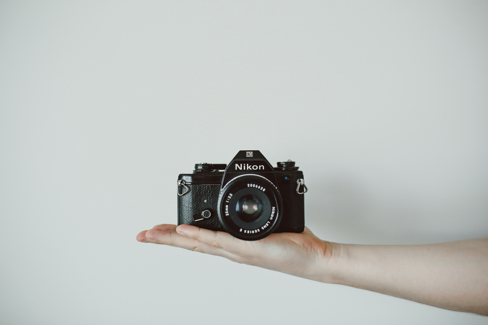
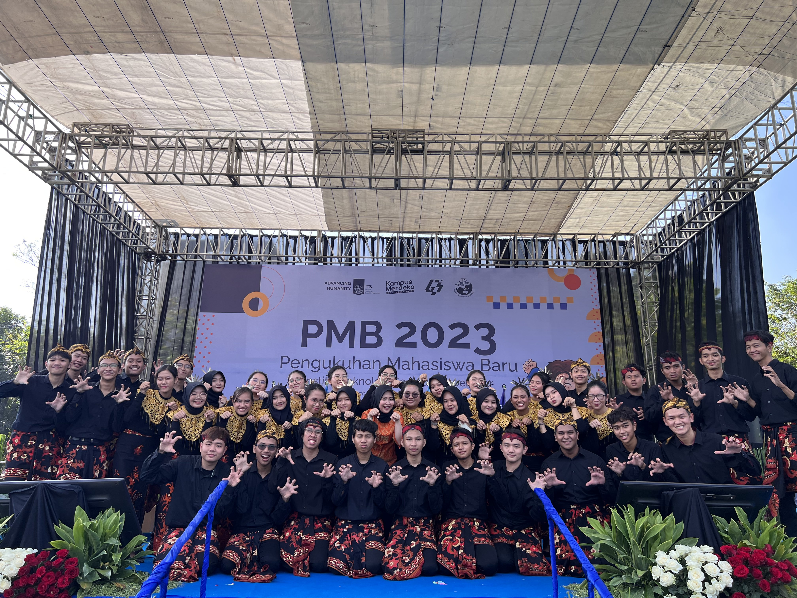

|
|
Homepage
Profile
Hometown
Local Food
Tourist Places
|

Hobbies
I have a lot of experience in videography, such as being the church multimedia main cameraman, both stationary and moving camera (gimbal), shot some prewedding videos, and made some short films.
I understand lighting, color grading, and how to maximize a camera's output. My other hobby is playing basketball and singing.

Organization experience
Being a part of an organization, whether as a member, leader, or volunteer, can be a transformative journey that shapes one's skills, values, and understanding of teamwork and leadership.
I have been active since my junior high school days, where i was elected as the vice president of OSIS. In Senior High School i joined MPK (Majelis Perwakilan Kelas) as the second secretary in my second year.
In college, i have been accepted as a PSDM intern on PSM ITS' cabinet.
Event Comittee Experiences
Event committees play a pivotal role in orchestrating memorable experiences for others. Event committees are the unsung heroes who work tirelessly behind the scenes to ensure that everything runs smoothly.
I'm currently enrolled in PMK as PDD staff. I'm also currently enrolling in Finance as a staff. And my biggest responsibilities yet, being the chairman for PSM ITS Goes to 6th Karangturi International Choir Competition.

Interests
In recent decades, the realm of game development has evolved into a captivating and dynamic field that continually pushes the boundaries of creativity, technology, and entertainment. With the advent of powerful hardware and software tools, as well as an ever-growing global gaming community, game development has become an exciting area of interest for me.
At the core of my interest in game development lies a deep passion for playing and experiencing video games.
|